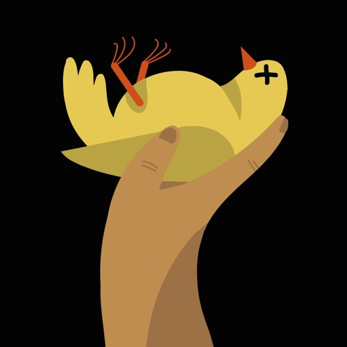
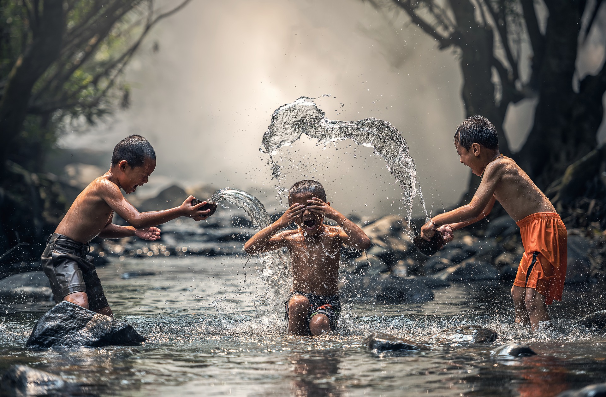
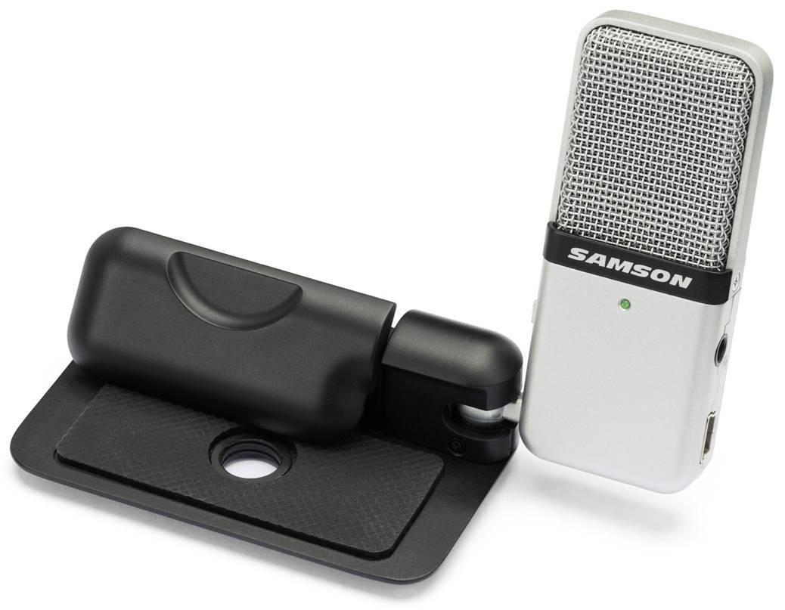

Shower Presentation Engine
Yours Truly, Famous Inc.
О чем доклад?
Вы - молодцы! ❤
Мы - молодцы! ❤
Начало


Первый выпуск

Путь к успеху
Крутые выпуски
Наша гордость
Не бойтесь делать что-то в нашем сообществе!
Фронт-ендеры - красавчики!